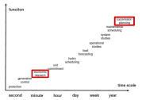
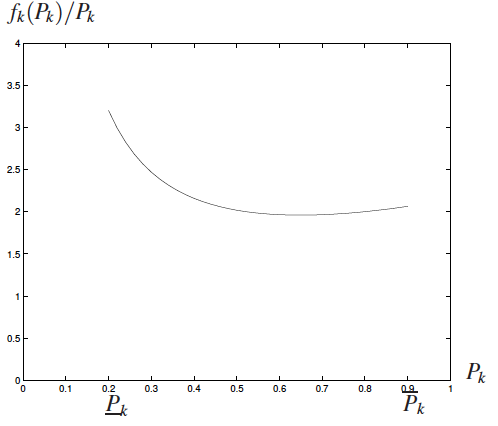
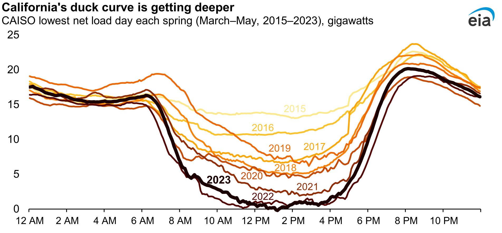

# The fleet: 12 dispatchable plants, plus wind and solar (used in the multi-period part)
gens = DataFrame(CSV.File("data/economic_dispatch/generators.csv"))
n_thermal = nrow(gens) - 2 # every plant except wind and solar
thermal = 1:n_thermal
demand_mw = 2200 # one hour's demand [MW]
dispatch = Model(HiGHS.Optimizer)
@variable(dispatch, y[g in 1:n_thermal] >= 0)
@objective(dispatch, Min, sum(gens[g, :VarCost] * y[g] for g in 1:n_thermal))
@constraint(dispatch, load, sum(y) == demand_mw)
@constraint(dispatch, capacity[g in 1:n_thermal], y[g] <= gens[g, :Pmax])
@constraint(dispatch, minimum_output[g in 1:n_thermal], y[g] >= gens[g, :Pmin])
set_silent(dispatch)
optimize!(dispatch)Economic Dispatch
Lecture 15
October 28, 2026
Review
Shadow Prices
A shadow price is the marginal change in the objective for an LP when a constraint is relaxed by one unit.
For example:
- What is the value in mitigation avoided of increasing the maximum allowable emissions by one ton?
- How much more profit could be earned from the purchase or leasing of one more acre of land?
Electric Power System Decision Problems
Overview of Electric Power Systems

Power Systems Schematic
Source: Wikipedia
Decision Problems for Power Systems

Decision Problems for Power Systems by Time Scale
Adapted from Perez-Arriaga, Ignacio J., Hugh Rudnick, and Michel Rivier (2009)
Electricity Generation by Source

Electricity Generation in 2024 by Source
Single-Period Economic Dispatch
Economic Dispatch
Decision problem: how much should each running plant produce to meet demand at lowest cost?
| Variable | Meaning |
|---|---|
| \(d\) | demand this hour (MW) |
| \(y_g\) | generation of plant \(g\) (MW) |
| \(\text{VarCost}_g\) | variable cost of plant \(g\) ($/MWh) |
| \(P^{\text{min/max}}_g\) | minimum and maximum output of \(g\) (MW) |
Where Variable Costs Come From
- labor and equipment upkeep;
- fuel (the big one), converted to $/MWh by the plant’s efficiency, its heat rate.
Cost curves are really slightly quadratic; we use a linear (or piecewise linear) approximation.

Source: Ross Baldick, UT Austin
The Single-Period Problem
Write the economic dispatch problem for one hour.
\[ \begin{aligned} \min_{\mathbf{y}} \quad & \sum_{g \in \mathcal{G}} \text{VarCost}_g \, y_g \\ \text{subject to:} \quad & \sum_{g \in \mathcal{G}} y_g = d \\[0.3em] & y_g \leq P^{\text{max}}_g \qquad \forall g \in \mathcal{G} \\[0.3em] & y_g \geq P^{\text{min}}_g \qquad \forall g \in \mathcal{G} \end{aligned} \]
Example: The Fleet
Code
# The fleet: 12 dispatchable plants, plus wind and solar (used in the multi-period part)
gens = DataFrame(CSV.File("data/economic_dispatch/generators.csv"))
n_thermal = nrow(gens) - 2 # every plant except wind and solar
thermal = 1:n_thermal
demand_mw = 2200 # one hour's demand [MW]
println("Demand is **$(demand_mw) MW**. The plants, at 2022 gas prices:\n")
# Summarise the fleet by type: how many plants, their capacity and cost ranges
for resource in unique(gens[thermal, :Resource])
rows = gens[thermal, :][gens[thermal, :Resource] .== resource, :]
n_plants = nrow(rows)
smallest, largest = extrema(rows.Pmax)
cheapest, dearest = extrema(rows.VarCost)
if smallest == largest
cap_text = "$(smallest) MW"
else
cap_text = "$(smallest)–$(largest) MW"
end
if cheapest == dearest
cost_text = "\\\$$(cheapest)/MWh"
else
cost_text = "\\\$$(cheapest)–$(dearest)/MWh"
end
println("- $(n_plants) $(resource): $(cap_text) capacity, $(cost_text)")
endDemand is 2200 MW. The plants, at 2022 gas prices:
- 1 Biomass: 50 MW capacity, $5/MWh
- 1 Hydroelectric: 250 MW capacity, $0/MWh
- 1 Nuclear: 600 MW capacity, $8/MWh
- 4 NG CCGT: 50–500 MW capacity, $56–81/MWh
- 5 NG CT: 48–100 MW capacity, $87–107/MWh
Single-Period Dispatch
Single-Period Model
Single-Period Results
Code
output = value.(y)
# Which plants are held at their minimum output this hour?
at_minimum = falses(n_thermal)
for g in thermal
if gens[g, :Pmin] > 0 && output[g] <= gens[g, :Pmin] + 1e-6
at_minimum[g] = true
end
end
p_results = bar(gens[thermal, :Plant], output, color=cb_blue, label="dispatched",
xrotation=45, ylabel="Generation [MW]", ylims=(0, 650), legend=:topright)
scatter!(p_results, gens[thermal, :Plant], gens[thermal, :Pmax], markershape=:hline,
markersize=18, markerstrokewidth=4, color=:black, label="capacity")
scatter!(p_results, gens[thermal, :Plant], gens[thermal, :Pmin], markershape=:hline,
markersize=18, markerstrokewidth=4, color=cb_vermillion, label="minimum")
plot!(p_results, size=(1200, 460), bottom_margin=22mm, left_margin=12mm)The Dispatch Stack/Merit Order
Code
# Minimum outputs first, then each plant's remaining capacity in order of cost
order = sortperm(gens[thermal, :VarCost])
widths = gens[thermal, :Pmax][order] .- gens[thermal, :Pmin][order]
heights = gens[thermal, :VarCost][order]
must_run = sum(gens[thermal, :Pmin])
left_edges = must_run .+ [0; cumsum(widths)[1:end-1]]
marginal = findfirst(left_edges .+ widths .>= demand_mw)
stack_price = heights[marginal]
rectangle(w, h, x) = Shape(x .+ [0, w, w, 0], [0, 0, h, h])
p_stack = plot(rectangle(must_run, 2.5, 0), color=:gray60, linewidth=0.5,
xlabel="Cumulative capacity [MW]", ylabel="Marginal cost [\$/MWh]",
xlims=(0, 2500), ylims=(0, 120), xticks=0:500:2500)
for i in eachindex(order)
if i == marginal
bar_color = cb_vermillion # the plant that sets the price
else
bar_color = cb_blue
end
plot!(p_stack, rectangle(widths[i], max(heights[i], 2.5), left_edges[i]),
color=bar_color, alpha=0.6, linewidth=0.5)
end
vline!(p_stack, [demand_mw], color=:black, linestyle=:dash, linewidth=3)
hline!(p_stack, [stack_price], color=cb_vermillion, linestyle=:dot, linewidth=3)
annotate!(p_stack, 300, 9, text("minimum outputs", 14, plot_font))
annotate!(p_stack, demand_mw + 20, 113, text("demand", 16, :left, plot_font))
annotate!(p_stack, 200, stack_price + 6, text("price: \$$(stack_price)/MWh", 16, :left, plot_font))
plot!(p_stack, size=(1200, 370), left_margin=12mm, right_margin=6mm)CT1 (red) serves the next MWh, so the price is $87/MWh.
Shadow Price from JuMP
shadow_price(load) is -87: relaxing demand by one unit means serving one less MWh, which saves $87. This shadow price is the price of electricity in wholesale electricity markets: the cost of the plant that served the last MWh.
Generating plants don’t lose money when they generate (expensive plants would lose money if the price was an average.)
What Complicates the Merit Order?
What could make the cheapest-first rule wrong?
- Minimum generation: Plants may have to generate a minimum amount to be on.
- Ramping limits: output can change only so fast from hour to hour.
- Start-up/shut-down: starting up a plant costs money, and shutting down can keep a plant offline for hours.
- Transmission: cheap power may not be able to reach the load if lines are congested.
Multi-Period Dispatch
Linking the Hours
Over many hours, plant \(g\) produces \(y_{g,t}\) MW in hour \(t\):
\[ \begin{aligned} \min_{\mathbf{y}} \quad & \sum_{g \in \mathcal{G}} \sum_{t \in \mathcal{T}} \text{VarCost}_g \, y_{g,t} \\ \text{subject to:} \quad & \sum_{g \in \mathcal{G}} y_{g,t} = d_t \qquad \forall t \in \mathcal{T} \\[0.3em] & P^{\text{min}}_g \leq y_{g,t} \leq P^{\text{max}}_g \qquad \forall g, t \end{aligned} \]
Output can change by at most \(R_g\) MW per hour. How can we write this as one or more linear constraints?
Ramping Constraints
Output can change by at most \(R_g\) per hour:
\[ \begin{aligned} \min_{\mathbf{y}} \quad & \sum_{g \in \mathcal{G}} \sum_{t \in \mathcal{T}} \text{VarCost}_g \, y_{g,t} \\ \text{subject to:} \quad & \sum_{g \in \mathcal{G}} y_{g,t} = d_t \qquad \forall t \in \mathcal{T} \\[0.3em] & P^{\text{min}}_g \leq y_{g,t} \leq P^{\text{max}}_g \qquad \forall g, t \\[0.3em] & \color{#D55E00}{y_{g,t+1} - y_{g,t} \leq R_g} \qquad \forall g, \ t = 1, \ldots, T-1 \\[0.3em] & \color{#D55E00}{y_{g,t} - y_{g,t+1} \leq R_g} \qquad \forall g, \ t = 1, \ldots, T-1 \end{aligned} \]
Ramp Limits by Plant Type
Code
# Each dispatchable plant type's ramp limit as a share of its capacity, slowest first
plant_types = unique(gens[thermal, :Resource])
lowest_share = zeros(length(plant_types))
highest_share = zeros(length(plant_types))
for (i, resource) in enumerate(plant_types)
rows = gens[thermal, :][gens[thermal, :Resource] .== resource, :]
lowest_share[i] = minimum(rows.Ramp ./ rows.Pmax)
highest_share[i] = maximum(rows.Ramp ./ rows.Pmax)
end
for i in sortperm(lowest_share)
lowest = round(Int, 100 * lowest_share[i])
highest = round(Int, 100 * highest_share[i])
if lowest == highest
share_text = "$(lowest)%"
else
share_text = "$(lowest)–$(highest)%"
end
println("- **$(plant_types[i])**: up to $(share_text) of capacity per hour")
end- Nuclear: up to 25% of capacity per hour
- NG CCGT: up to 40% of capacity per hour
- Biomass: up to 100% of capacity per hour
- Hydroelectric: up to 100% of capacity per hour
- NG CT: up to 100% of capacity per hour
Demand and Renewables on a Fall Day
Code
# Demand: the shape of an October day from the New York hourly load file, raised
# to fit this fleet. Illustrative, not a real system's demand.
load_data = DataFrame(CSV.File("data/economic_dispatch/2020_hourly_load_NY.csv"))
day = 289
hours = (day * 24 + 1):((day + 1) * 24)
demand_shift = 600 # [MW]
hourly_demand = load_data[hours, :C] .+ demand_shift # [MW]
capacity_factor = DataFrame(CSV.File("data/economic_dispatch/gen_variability.csv"))
p_demand = plot(1:24, hourly_demand, color=:black, xlabel="Hour", ylabel="Demand [MW]",
xticks=0:6:24, title="Demand")
p_cf = plot(1:24, capacity_factor.Wind, color=cb_sky, label="wind", xlabel="Hour",
ylabel="Capacity factor", ylims=(0, 1), xticks=0:6:24, title="Wind and solar")
plot!(p_cf, 1:24, capacity_factor.Solar, color=cb_orange, linestyle=:dash, label="solar")
plot(p_demand, p_cf, layout=(1, 2), size=(1200, 330), left_margin=10mm, bottom_margin=10mm)A capacity factor is the share of a plant’s capacity the weather makes available each hour.
Adding Renewables
Wind and solar enter through their capacity factors \(c_{g,t}\):
\[y_{g,t} \leq P^{\text{max}}_g \times c_{g,t} \qquad \forall g \in \mathcal{G}, t \in \mathcal{T}\]
Everything else stays the same. Their variable cost is zero, so the dispatch uses all they can give, unless something else stops it.
Multi-Period Results
Code
n_plants = nrow(gens)
day_hours = 1:24
nuclear_row = findfirst(gens.Plant .== "Nuclear")
# Share of each plant's capacity available each hour: all of it for the dispatchable
# plants, the capacity factor for wind and solar (the last two plants)
availability = ones(n_plants, 24)
availability[n_plants-1, :] = capacity_factor.Wind
availability[n_plants, :] = capacity_factor.Solar
function solve_day(; ramp=true, solar_scale=1)
pmax = Float64.(gens.Pmax)
pmax[end] *= solar_scale # the last plant is solar
available = pmax .* availability # [MW], plants × hours
model = Model(HiGHS.Optimizer)
@variable(model, gens[g, :Pmin] <= z[g in 1:n_plants, t in 1:24] <= available[g, t])
@objective(model, Min, sum(gens[g, :VarCost] * z[g, t] for g in 1:n_plants, t in 1:24))
@constraint(model, hourly_load[t in 1:24], sum(z[:, t]) == hourly_demand[t])
if ramp
# ramp limits apply to the dispatchable plants
@constraint(model, ramp_up[g in thermal, t in 1:23], z[g, t+1] - z[g, t] <= gens[g, :Ramp])
@constraint(model, ramp_down[g in thermal, t in 1:23], z[g, t] - z[g, t+1] <= gens[g, :Ramp])
end
set_silent(model)
optimize!(model)
prices = [-shadow_price(hourly_load[t]) for t in day_hours]
return (generation=value.(z), available=available, cost=objective_value(model), prices=prices)
end
base_day = solve_day()
# Sum generation by resource type for the area plot
resources = ["Nuclear", "Hydroelectric", "Biomass", "Wind", "Solar", "NG CCGT", "NG CT"]
resource_colors = [cb_purple, cb_blue, cb_green, cb_sky, cb_yellow, cb_orange, cb_vermillion]
by_resource = zeros(length(day_hours), length(resources))
for (j, resource) in enumerate(resources)
by_resource[:, j] = vec(sum(base_day.generation[gens.Resource .== resource, :]; dims=1))
end
areaplot(day_hours, by_resource, label=permutedims(resources), color=permutedims(resource_colors),
xlabel="Hour", ylabel="Generation [MW]", legend=:outerright, xticks=0:6:24,
size=(1200, 460), left_margin=10mm, ylims=(0, 2600))Hourly Prices
Code
no_ramp_day = solve_day(ramp=false)
ramp_cost = base_day.cost - no_ramp_day.cost
# What sets the price at hour 19 with ramp limits: CCGT4 supplies the next MWh,
# and to do it must also run one MWh higher at hour 18, in place of CCGT1
ccgt1_row = findfirst(gens.Plant .== "NG CCGT1")
ccgt4_row = findfirst(gens.Plant .== "NG CCGT4")
head_start_cost = gens[ccgt4_row, :VarCost] - gens[ccgt1_row, :VarCost]
@assert round(Int, base_day.prices[19]) == gens[ccgt4_row, :VarCost] + head_start_cost
# The notes say the two solutions' prices differ in one hour only
@assert count(abs.(base_day.prices .- no_ramp_day.prices) .> 0.01) == 1
p_prices = plot(day_hours, base_day.prices, seriestype=:steppost, color=cb_blue,
label="with ramp limits", xlabel="Hour", ylabel="Price [\$/MWh]", xticks=0:6:24,
ylims=(0, 120), legend=:bottomright)
plot!(p_prices, day_hours, no_ramp_day.prices, seriestype=:steppost, color=cb_vermillion,
linestyle=:dash, label="without ramp limits")
plot!(p_prices, size=(1200, 300), left_margin=10mm)Each hour’s price is its demand shadow price: $58 most hours, $90 in the morning, $107 at the evening peak.
Renewables and the Duck Curve
The “Duck Curve”
Net load is demand minus wind and solar. Who supplies the steep rise at sunset?

Source: EIA
Fast but expensive gas turbines, or plants kept on all afternoon.
Tripling the Solar Capacity
Code
triple_solar_day = solve_day(solar_scale=3)
triple_solar_no_ramp = solve_day(solar_scale=3, ramp=false)
# Zero-cost energy (hydro, wind and solar) that was available but not used [MWh]
unused = triple_solar_day.available .- triple_solar_day.generation # plants × hours
unused_free_energy = sum(unused[gens.VarCost .== 0, :])
p_solar = plot(day_hours, base_day.prices, seriestype=:steppost, color=cb_blue,
label="$(gens[end, :Pmax]) MW solar", xlabel="Hour", ylabel="Price [\$/MWh]", xticks=0:6:24,
ylims=(0, 120), legend=:bottomleft)
plot!(p_solar, day_hours, triple_solar_day.prices, seriestype=:steppost, color=cb_orange,
linestyle=:dash, label="$(commas(3 * gens[end, :Pmax])) MW solar")
plot!(p_solar, size=(1200, 300), left_margin=10mm)With three times the solar capacity, midday prices fall to $0; the evening peak stays at $107.
Key Takeaways and Upcoming Schedule
Key Takeaways
- Economic dispatch: run existing, on-line plants at least cost (the merit order).
- Price of electricity is the demand constraint’s shadow price: the marginal cost of supplying electricity, not the average cost.
- Minimum outputs, ramping, and transmission constraints can break the merit order.
- More solar makes midday power cheap and the evening ramp steep (the duck curve).
Next Classes
Monday, November 2: Capacity expansion: deciding what to build, not just how to run what exists.
Wednesday, November 4: Quiz 4, then mixed integer programming.
Assessments
Homework 6: Due tomorrow (Thursday, October 29) at 9pm.
Mini-Project 2: Assigned today, due Thursday, November 19.
Quiz 4: Wednesday, November 4. Problem 1.1 of Mini-Project 2, which formulates a multi-period dispatch problem with ramping limits, is good practice.